100 % gratuit
Nouveau · DynamiqueLa physique en simulations interactives.
Chaque notion de physique devient une expérience que tu manipules : tu bouges un curseur, tu attrapes un objet, et tu vois les forces, les rayons et les courants réagir.
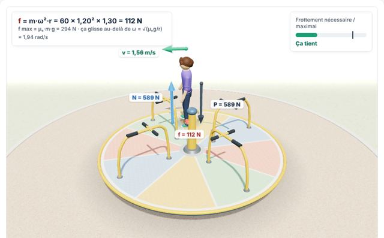
Forces sur un tourniquetOutils mathématiques : fonctions, dérivées, vecteurs3 simulations
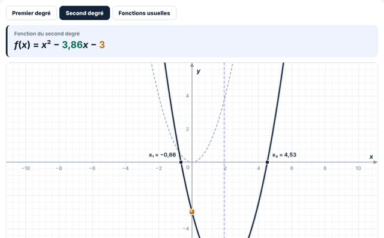
Outils mathématiquesLaboratoire de fonctionsNouveauBouge les paramètres d'une fonction et regarde sa courbe et son équation changer ensemble
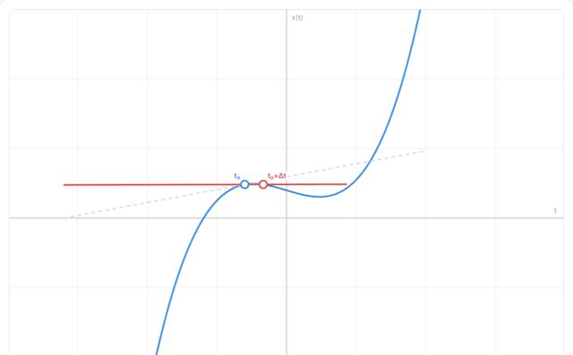
Outils mathématiquesDérivéePente de la tangente et taux de variation
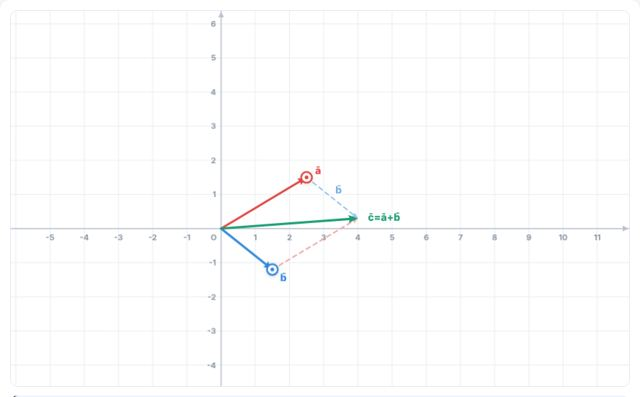
Outils mathématiquesVecteursComposantes, somme et produit de vecteurs
Cinématique : décrire le mouvement3 simulations
Dynamique : forces et lois de Newton9 simulations
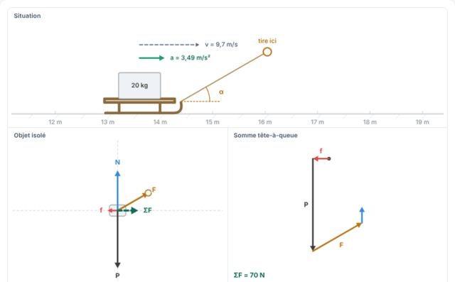
DynamiqueDiagramme de forces et 2ᵉ loiNouveauConstruire le bilan des forces et en déduire l'accélération
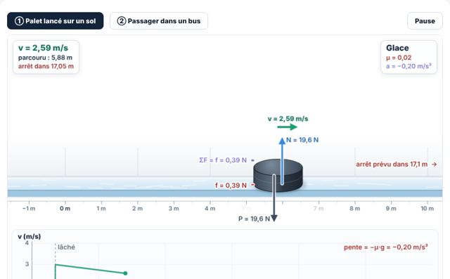
Dynamique1re loi : le principe d'inertieNouveauSans force résultante, un objet garde sa vitesse : il ne s'arrête pas tout seul
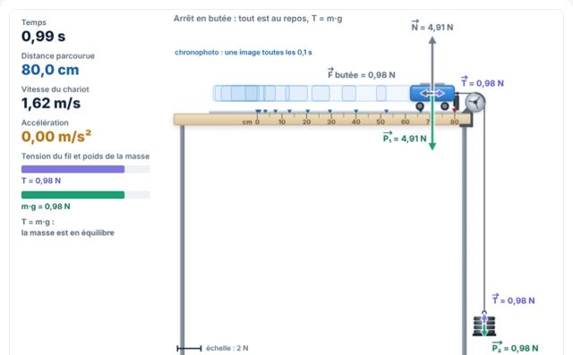
Dynamique2e loi : F = m·aNouveauUn chariot tiré par une masse qui tombe : mesure l'accélération et vérifie F = m·a
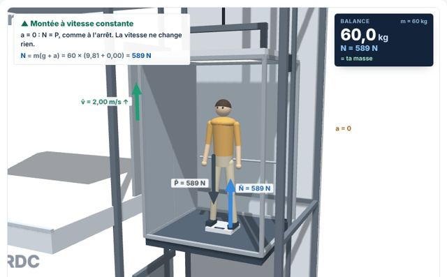
DynamiquePoids apparent dans un ascenseurNouveauLa balance sous tes pieds n'indique pas ton poids quand l'ascenseur accélère
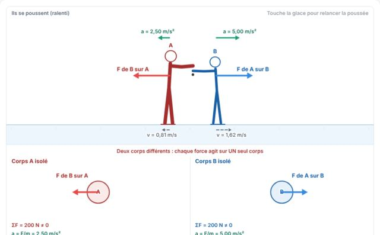
DynamiqueAction et réactionNouveauLa 3ᵉ loi de Newton : deux forces égales, sur deux corps différents
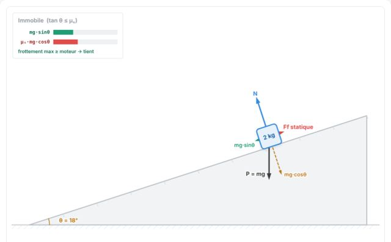
DynamiquePlan inclinéDécomposition du poids et mouvement sur une pente
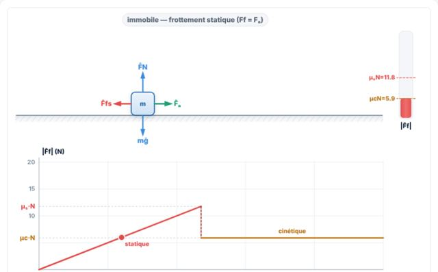
DynamiqueCoefficient de frottementFrottement statique et cinétique
DynamiqueForces sur un tourniquetNouveauPoids, réaction, frottement et force centrifuge sur une personne qui tourne
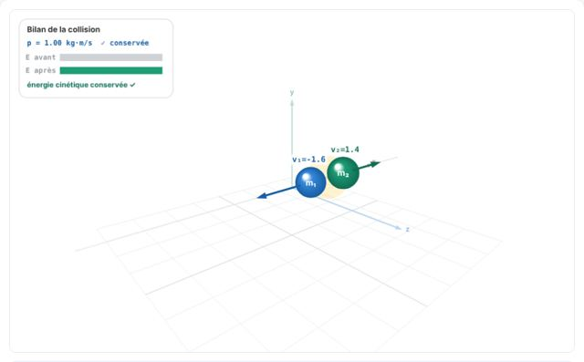
DynamiqueImpulsionQuantité de mouvement et chocs
Statique, équilibre et gravitation4 simulations
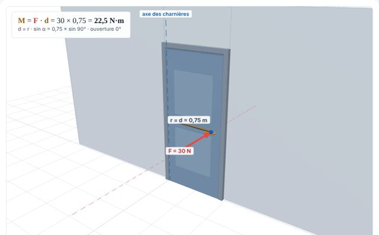
Statique et gravitationMoment de forceBras de levier, force et rotation
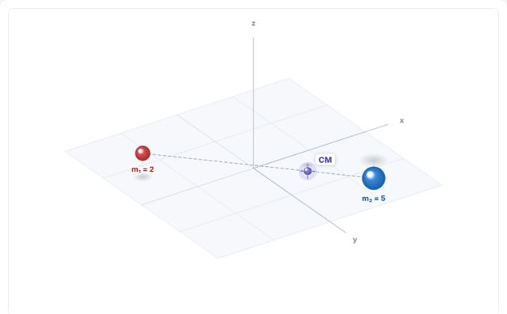
Statique et gravitationCentre de massePosition du centre de masse d'un système
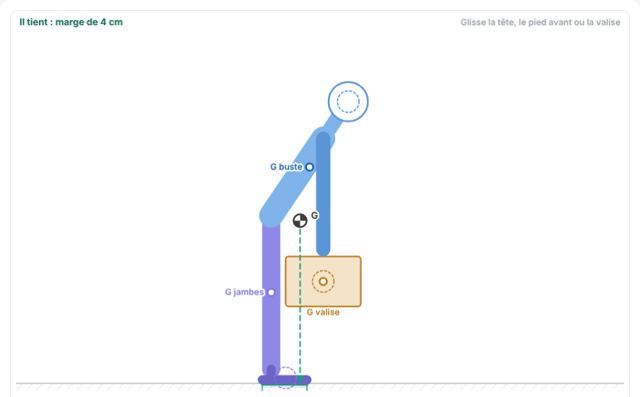
Statique et gravitationÉquilibre et stabilitéNouveauCentre de gravité, base d'appui et équilibre stable ou instable
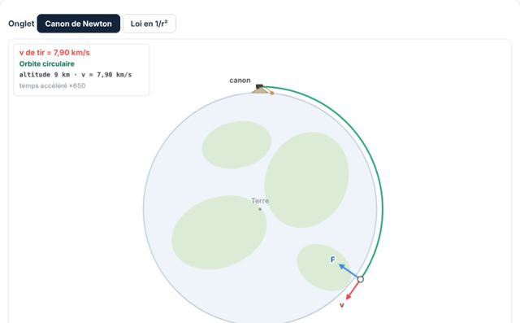
Statique et gravitationGravitation et satelliteNouveauLa force en 1/r², le poids et le canon de Newton
Travail, énergie et puissance5 simulations
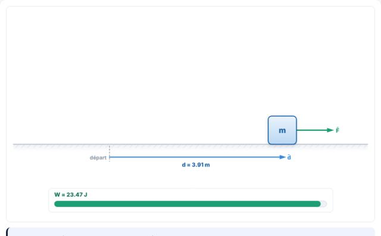
Travail et énergieTravail d'une forceForce, déplacement et angle
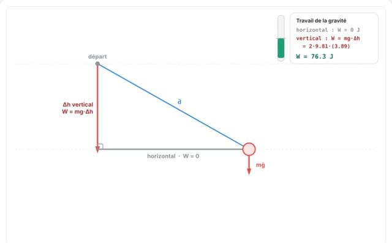
Travail et énergieTravail de la gravitéLe travail du poids ne dépend que de la hauteur
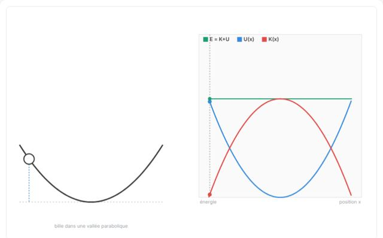
Travail et énergieÉnergiesÉnergie cinétique, potentielle et mécanique
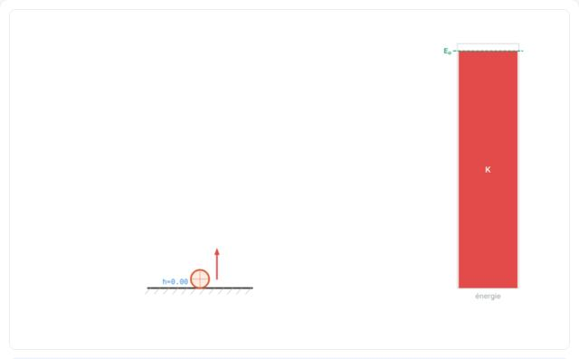
Travail et énergieÉnergie : exemplesConservation de l'énergie dans des cas concrets
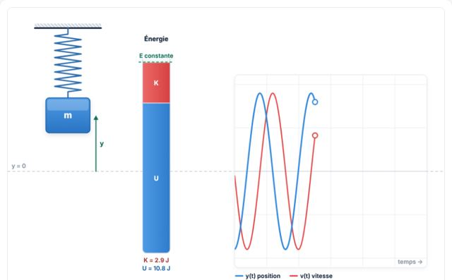
Travail et énergieÉnergie d'un ressortÉnergie potentielle élastique et cinétique
Oscillations : ressorts, pendules, résonance4 simulations
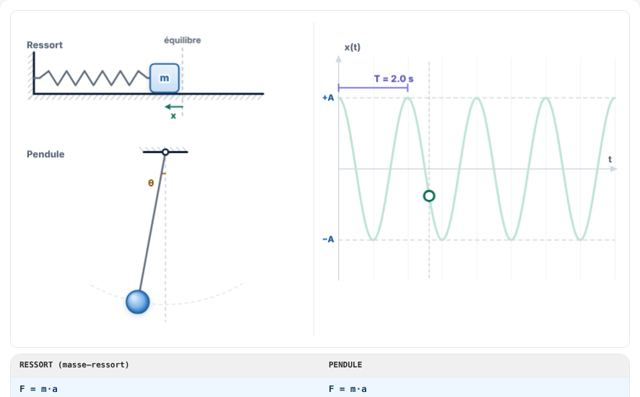
OscillationsOscillateur harmoniqueMasse-ressort, période et phase
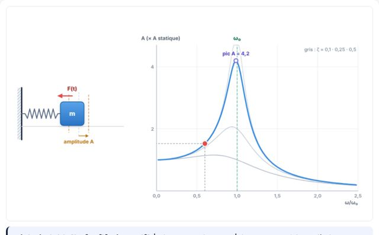
OscillationsRésonanceOscillateur forcé et pic de résonance
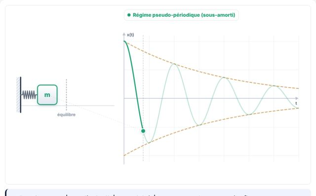
OscillationsAmortissementRégimes pseudo-périodique, critique et apériodique
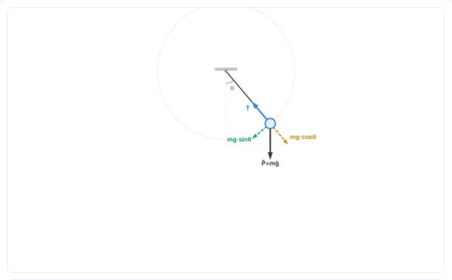
OscillationsPendule 2D-3DPendule simple vu en plan et en perspective
Mécanique des fluides3 simulations
Ondes, interférences et diffraction8 simulations
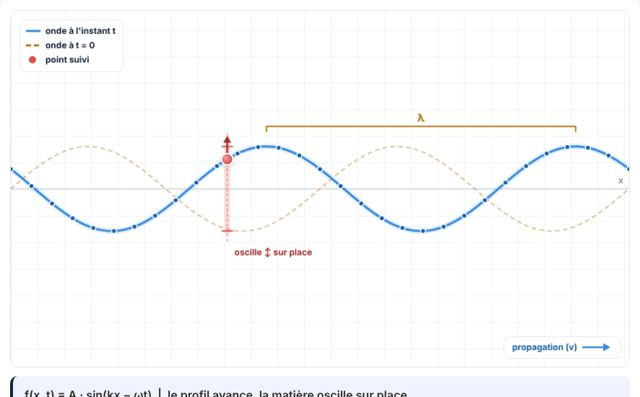
OndesOnde progressivePropagation d'une perturbation
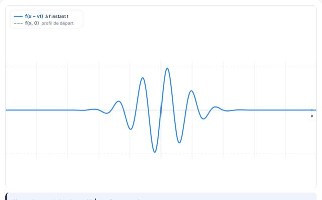
OndesFonction d'onde f(x − vt)Translation d'un profil dans le temps
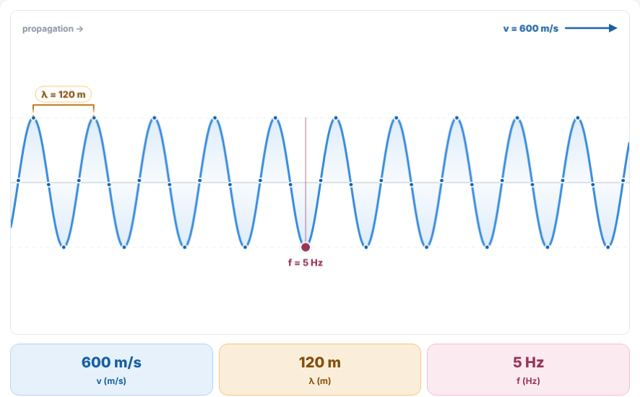
OndesRelation v = λfVitesse, longueur d'onde et fréquence
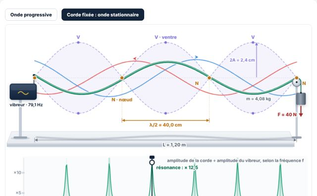
OndesOnde progressive et stationnaireSuperposition, nœuds et ventres
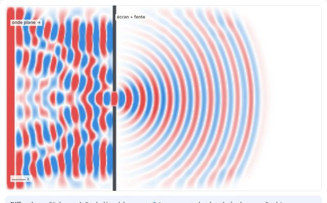
OndesDiffractionPassage d'une onde par une fente
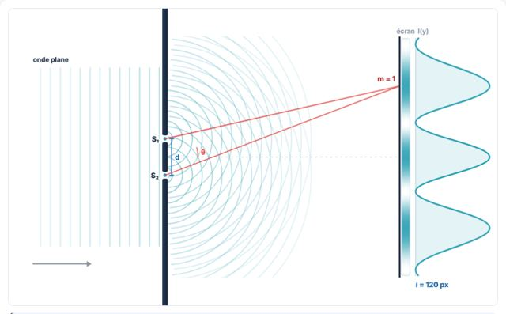
OndesFentes de YoungInterférences : écartement des fentes, longueur d'onde et interfrange
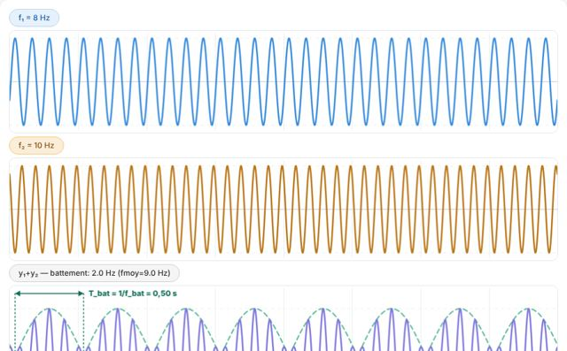
OndesBattementsSuperposition de deux fréquences voisines
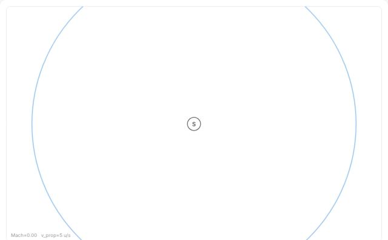
OndesEffet DopplerFréquence perçue d'une source en mouvement
Réflexion et réfraction de la lumière2 simulations
Lentilles et instruments d'optique3 simulations
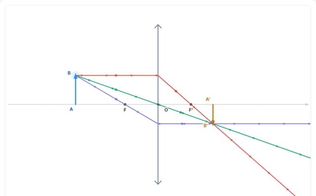
Lentilles et optiqueLentille mince : construire l'imageNouveauLes trois rayons, la relation de conjugaison et le grandissement
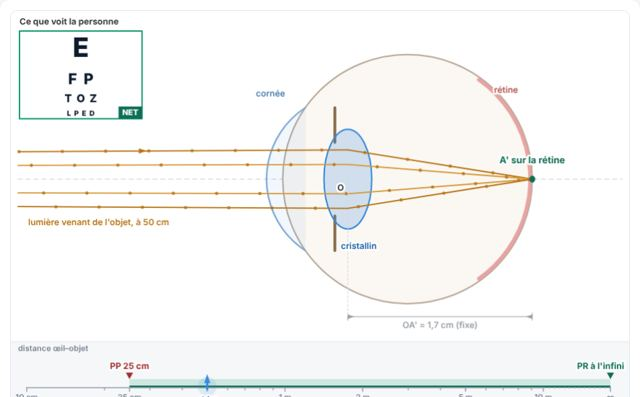
Lentilles et optiqueL'œil et sa correctionNouveauAccommodation, myopie, hypermétropie et verres correcteurs
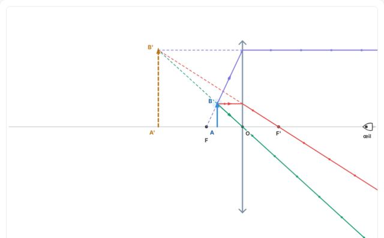
Lentilles et optiqueLa loupe et le microscopeNouveauDeux instruments d'optique simples, une même construction
Électrostatique : charges et champs4 simulations
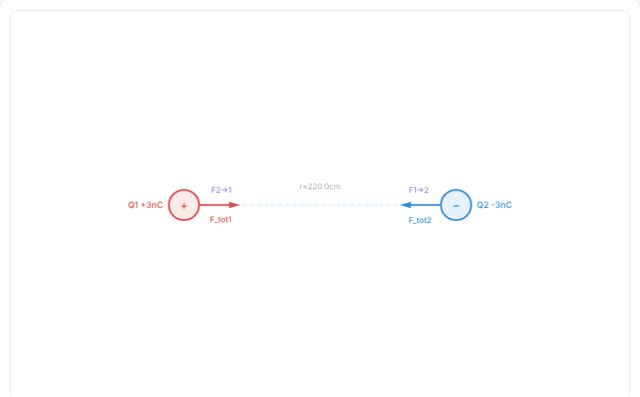
ÉlectrostatiqueForces électrostatiquesLoi de Coulomb entre charges
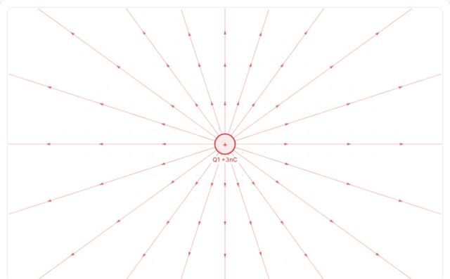
ÉlectrostatiqueChamp électrostatiqueLignes de champ autour des charges
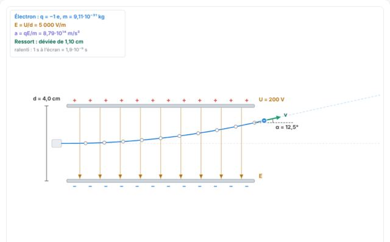
ÉlectrostatiqueUne charge entre deux plaquesNouveauChamp uniforme E = U/d et trajectoire parabolique
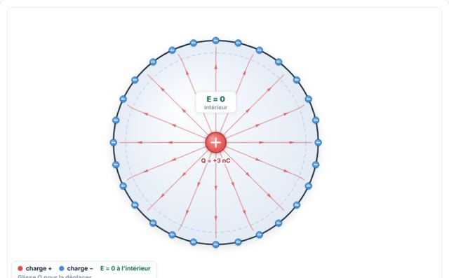
ÉlectrostatiqueConducteurCharges et champ dans un conducteur en équilibre
Électrocinétique : circuits et courant2 simulations
Courant alternatif1 simulation
Magnétisme et forces électromagnétiques5 simulations
MagnétismeRègle de la main droiteOrientation du produit vectoriel en 3D
MagnétismeAimants, courants et force de LaplaceNouveauLignes de champ B, champ d'un courant et force F = I·L·B
MagnétismeForces entre fils parallèlesCourants de même sens ou de sens opposés
MagnétismeCyclotronAccélération d'une particule chargée dans un champ magnétique
MagnétismeLoi de Lenz : inductionNouveauApproche un aimant d'une spire : le courant induit allume l'ampoule et s'oppose au mouvement
Aucune simulation ne correspond à ta recherche.
Pour t'entraînerRappels théoriques, exercices corrigés et QCM, chapitre par chapitre.
Voir les exercices